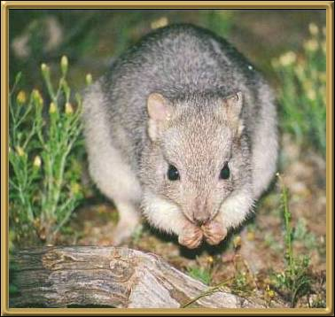

Boodie or Burrowing Bettong - This tiny burrowing kangaroo lived throughout the arid and semi arid zones of Australia 200 years ago. It was considered for many years to be extinct however, this small, thickset animal with short, rounded ears and a lightly haired, fat tail, has been found on Western Australian islands -- and has been successfully introduced to the Yookamurra sanctuary! This animal is also a night forager, and builds burrows several feet long. These burrows are often joined together to make a warren. Their status is still considered to be vulnerable.
Photographer: Unknown
This is the last in the series of animals. Please return home and choose another area.